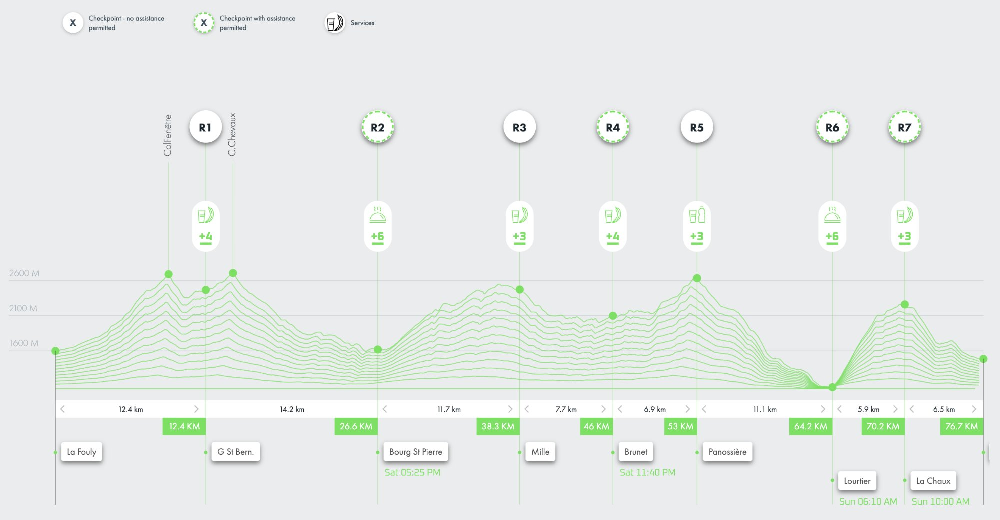

z Prahy
& příjezd
& jídlo
(doufám)
domů
Čau tatí,
takový narozeniny, to si zaslouží pořádný dárek! A mně moc záleží na tom, abychom spolu trávili čas — takže jsem to spojila dohromady.
Zvu tě na malý letní výlet. Se mnou 😄
Hory, výlety, nějaká čokoláda a fondue, krávy...už víš, kam to bude?
Vyrazíme v úterý 7. července odpoledne, přespíme někde cestou a ve středu uděláme zastávku na výlet. Ještě jsem nic nebookovala — domluvme se, která cesta bude nejlepší. Navrhuji jet přes Německo spodem a zastavit na noc někde u Bodensee.
Máme dvě možnosti. Vyber si:
Odpoledne vyrazíme dál a večer dorazíme do cíle — do Verbier. Čeká na nás hotel se snídaní!
Verbier je v létě výletní ráj. Lanovky fungují, turistické trasy jsou otevřené, krav je dostatek. Žádné dlouhé túry, ale možností je spoustu, například:


V sobotu ráno 11. července vybíhám na UTMB X-Traversée — 77 km a 5 000 výškových metrů přes 5 alpských sedel, od La Fouly do Verbier. Předpokládám tak 18–24 hodin na trati.

Poběžím tedy do neděle 12. července do rána. Pokud neodstoupím někde ve tři ráno na nějakém hřebeni. Ale zkusím do té doby natrénovat.
No a v pondělí pojedeme zpět. Já vyběhaná, ty snad spokojený.
V pondělí jedeme zpět. Já vyběhaná, ty snad spokojený.
Doufám, že se ti výlet bude líbit. A já, že doběhnu.
Mám tě ráda. Všechno nejlepší, tatí!
Baru